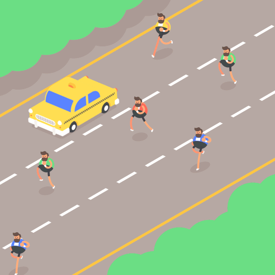
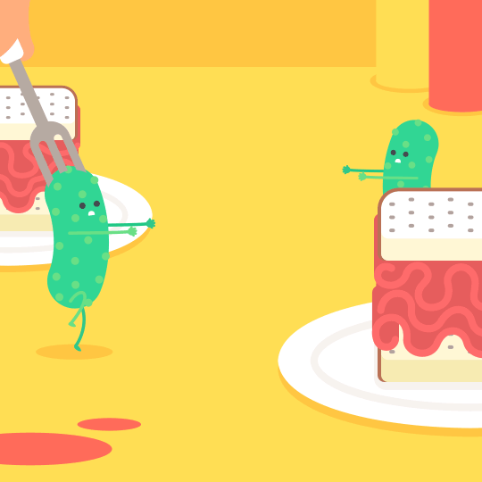
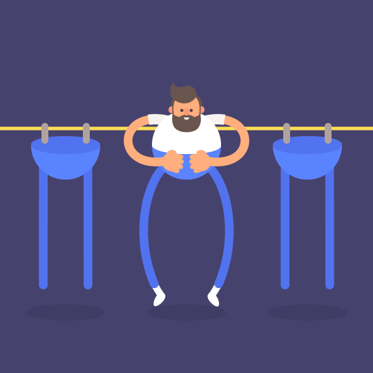
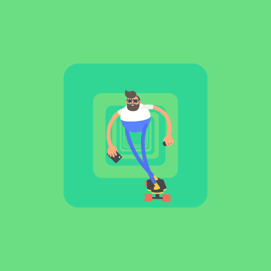
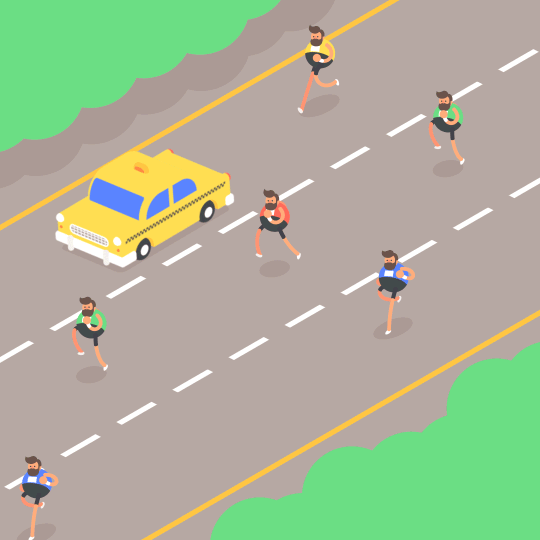
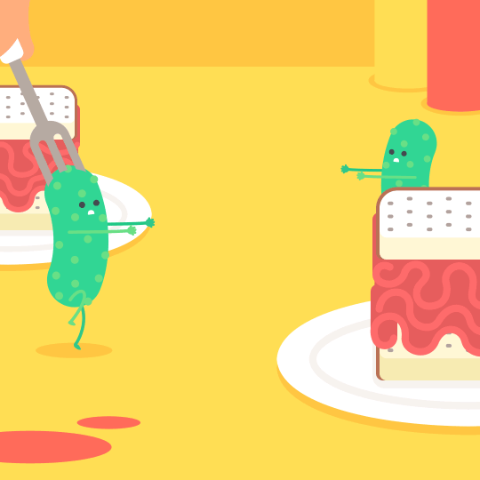
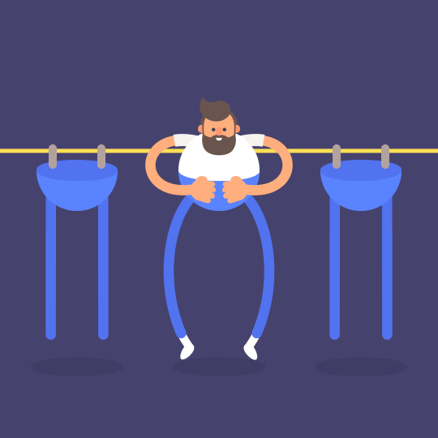
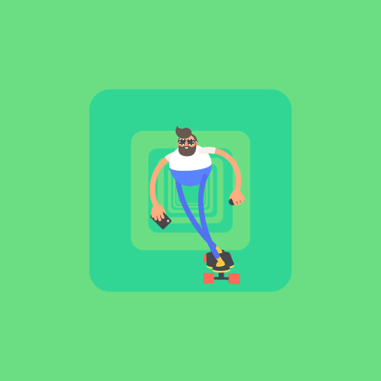
 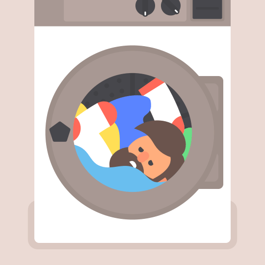
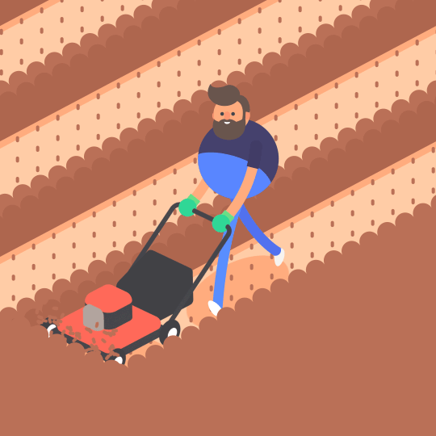
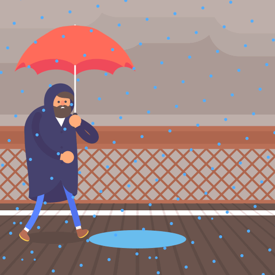
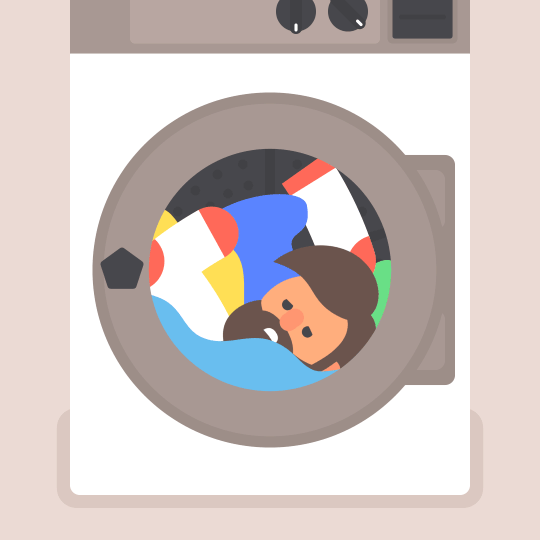
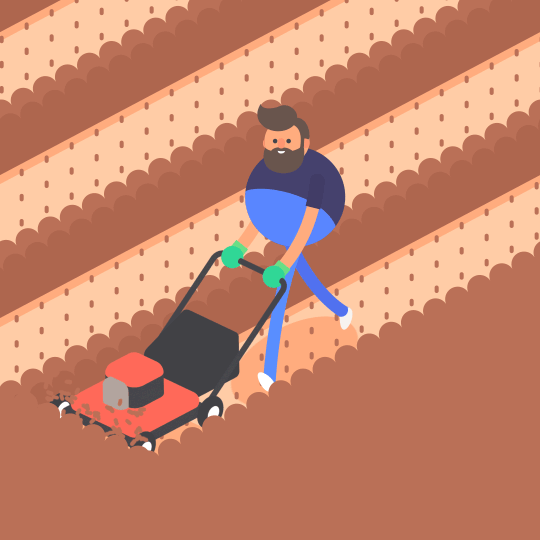
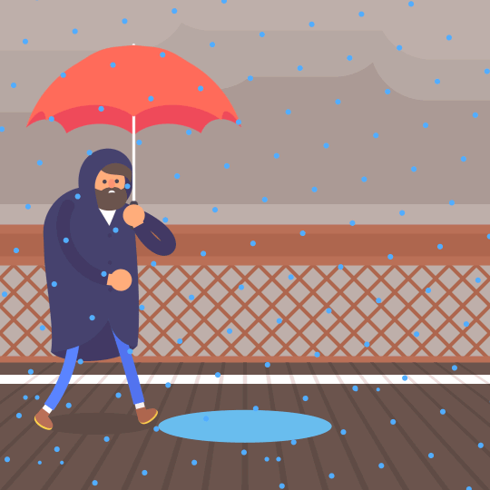


ลดน้ำหนักอย่างไรให้ปลอดภัย
เพื่อสุขภาพที่ดีในวันข้างหน้า
ทฤษฏีเกี่ยวกับการออกกำลังกายที่หลายคนต่างก็เชื่อจนกลายเป็นข้อเท็จจริงที่ฝังแน่นอยู่ในความรู้ของเรามาเป็นเวลานานนับร้อยปี การออกกำลังกายที่เรารู้ว่าจะต้องออกอย่างน้อย 30 นาทีขึ้นไป หรือการที่มีเหงื่อออกจะช่วยกระตุ้นให้ร่างกายผอมลงได้ ไปจนถึงหลักการลดน้ำหนักด้วยวิธีอดอาหารก็ล้วนเป็นทางเลือกที่ผู้คนเลือกใช้ตามความเชื่อและความรู้ที่ได้รับมา ทว่าเรื่องราวเหล่านี้ยังมีบางส่วนที่ถูกบิดเบือนไปจากความจริง
เนื่องจากเป้าหมายของการออกกำลังกายคือ การกำจัดไขมันส่วนเกิน ดังนั้นน้ำหนักที่ลดลงไปจึงไม่ได้เป็นผลสรุปได้ว่าเราจะผอมลงได้และไม่กลับมาอ้วนอีก หากสังเกตให้ดีผู้หญิงที่ออกกำลังกายอย่างถูกวิธี กับผู้หญิงที่ออกกำลังกายแบบผิด ๆ เมื่อนำมาชั่งน้ำหนักพร้อมกัน พบว่าคนแรกมีน้ำหนักมากกว่า ส่วนคนที่สองมีน้ำหนักน้อยกว่า แต่เมื่อเทียบสัดส่วนกันแล้วกลับพบว่าคนแรกมีหุ่นที่ผอมเพรียวและกระชับ ส่วนคนที่สองกลับยังดูอวบอ้วน ลักษณะแบบนี้คงจะเป็นหนึ่งในความเชื่อผิด ๆ ที่เราจะพาทุกคนไปเจาะลึกกับความรู้ใหม่ แล้วเปลี่ยนความคิดเดิม ๆ สู่การออกกำลังกายอย่างถูกวิธีกันให้มากขึ้นค่ะ
1. การควบคุมอาหาร (diet) หลักการควบคุมอาหารเพื่อลดความอ้วนคือ การรับอาหารเข้าไปในร่างกายในปริมาณที่น้อยกว่าที่ร่างกายต้องการใช้ ทำให้ร่างกายเกิดการสลายพลังงานที่เก็บเอาไว้ในร่างกายออกมาใช้น้ำหนักจึงลดลง ซึ่งการลดน้ำหนักโดยวิธีนี้ต้องอาศัยความแน่วแน่ของจิตใจ เพราะถ้าไม่ตั้งใจจริงในการควบคุมอาหาร ผลสำเร็จที่ได้ก็จะลดลง แต่ไม่ควรที่จะใช้วิธีการอดอาหารอย่างเด็ดขาด เพราะจะทำให้ร่างกายขาดสารอาหารที่จำเป็น ควรเปลี่ยนมาเป็นการควบคุมปริมาณอาหารในแต่ละมื้อจะเป็นสิ่งที่ดีกว่า
2. การออกกำลังกาย (exercise) การออกกำลังกายถือว่าเป็นหัวใจสำคัญในการลดน้ำหนัก เมื่อร่างกายใช้พลังงานมากกว่าปริมาณอาหารที่ได้รับ ร่างกายจะนำไขมันส่วนเกินที่เก็บสะสมเอาไว้มาเปลี่ยนเป็นพลังงานในการออกกำลังกายทำให้น้ำหนักลดลง การออกกำลังกายยังมีผลดีในระยะยาว ทำให้สุขภาพทั้งร่างกายและจิตใจดีขึ้น ซึ่งโดยส่วนใหญ่แล้ววิธีลดน้ำหนักโดยการออกกำลังกายมักที่จะทำควบคู่ไปกับการควบคุมอาหาร ซึ่งการออกกำลังอย่างได้ผล ควรจะใช้เวลาในการออกกำลังกายประมาณ 30-60 นาที ต่อครั้ง สัปดาห์ละ 3-5 ครั้ง
3. เปลี่ยนแปลงพฤติกรรมที่ไม่เหมาะสม เป็นการเปลี่ยนพฤติกรรมของตัวเอง โดยความสำเร็จในการลดน้ำหนักจะขึ้นอยู่กับความตั้งใจว่ามีความแน่วแน่มากน้อยเพียงใด โดยเริ่มจากการลดละเลิก นิสัยการชอบกินแบบจุกจิก ชอบทานขนมก่อนนอน ชอบทานอาหารมันๆ พฤติกรรมเหล่านี้ถือว่าไม่เหมาะสม จำเป็นที่จะต้องมีการเปลี่ยนแปลงพฤติกรรม โดยพยายามเปลี่ยนมาเป็นการทานอาหารเฉพาะมื้อหลัก พร้อมกับงดอาหารว่างระหว่างมื้อ และที่สำคัญคือ ต้องหลีกเลี่ยงอาหารที่มีไขมันเป็นจำนวนมาก
คลิกที่นี่เพื่อดูรายชื่ออาหารคลีนง่ายๆ